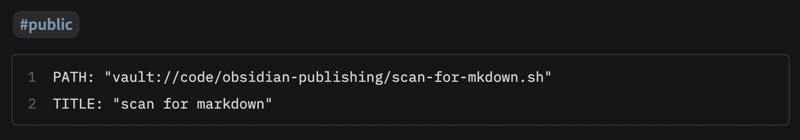

Obsidan, Quartz, and Github pages are used. I made a script to move public files from the Obsidian vault to the Quartz folder for publishing. Links to private pages are removed. scan-for-markdown-code-display-page|see code
Reference
Make a file executable in Terminal on Mac
compile ./scan-for-mkdown.sh
view locally npx quartz build --serve
push npx quartz sync
test file
To Do - Mini Steps
- Get own domain
- burnout dataview
- publish front matter
- css design for obsidian and quartz
- see if I can get anchors to work on quartz publish
Log
2024-10-20 did some design work to really focus the direction I want this site to go. Quite accidentally recreated exactly how Jackie already made the explorer. The issue with the explorer as it is right now is because I’m copying content over, it looses the file/folder structure. So now… I have to figure out how I want structure the file/folder arrangement. It kinda forces the issue for me to organize the fold/folder structure. How the heck do I want to do this in a sustainable way? Solution: bankruptcy. This is another evolution of organization so I’ll follow the advice of not going back and redoing everything. Just do it this way from this point forward. Need to update code to write folder structure.
2024-10-06 taking another look at the css. Tailwind might be the ticket. How do use tailwind? But maybe first, update code to disable links that aren’t public. - done
Then, tweak 404 page to use a back button or home. https://github.com/brandonkboswell/quartz/blob/hugo/layouts/404.html
- update and test code with ggrep, reference https://chatgpt.com/c/cc0ad39b-6d32-4114-890d-870e64317ecb ➕2024-10-06 - done
- someday figure out how to add
target="_blank" rel="noopener noreferrer"to external link creation. I think this is the creator for internal links, now I need find the one that does external links. Open the quartz folder in vs code and search. ➕2024-10-06
2024-10-04 Tweaked some of the colors for the light theme.
2024-09-07 from Forte2022BuildingASecond Brain make ideas surfaced. Forte2023PARA make project focus. ADHD overwhelm, just mini steps. Anyone of them is fine to do. When done list as done on that day.
2024-09-01 added Prius project.
2024-08-30 How to “burnout” dataview to quartz. This is important for eventual list of note taking apps table. BurningOut Dataview To Markdown
2024-08-20 Would like to publish front matter since it contains source information. Already a known issue may be fixed in the future. Wait on this. https://github.com/jackyzha0/quartz/issues/1208
2024-08-15 Quartz removes single return line breaks. Must be double. Consider fix since its a typical style I use when writing in Obsidian.
2024-08-09 Issue with image files that have custom display i.e. ![[urban-garden-japan.jpg|300]]. How to solve this? v1 would be remove the |300 so it be uploaded at all. v2 would be to figure out how to reincorporate it into the site display. Close to having enough things to track to implement an issue tracker: https://github.com/ljavuras/obsidian-power-tools/tree/main/Issue%20Tracker
Updates wanted:
- fix sed regex - done
- update media file creation/update logic to avoid unnecessary copying - done
- update file creation/update logic to avoid unnecessary copying… is this worth it?
2024-08-08 Working on media links. Oops! Unending loop on @RyanMarin file. Because self-linked. Since scanning whole vault, no recursion is needed. Think about process, design, and performance. Maybe add back in, maybe. Fixed media links, was greedy a regex issue.
share code question
- ha, found same idea. scan vault for publish tag https://www.ssp.sh/brain/public-second-brain-with-quartz/
- interesting but no https://forum.obsidian.md/t/raw-embed-of-javascript-into-a-code-block/47950/3
- plugin option Embed Code - works locally, but not in publish process… I can use the embed for easy copy and paste but something tells me it isn’t going to be possible or easy. If I return to coding I should probably be using github anyway. Moving on.
PATH: "vault://code/obsidian-publishing/scan-for-mkdown.sh"
LINES: "11-13"
TITLE: "scan for markdown test" 
Updates wanted:
- bundle
find-markdown.shandnpx sync quartz - update css design of site
2024-08-06 Unsure about customizing technology I know little about or if help will arrive. Attempting to use quartz in normal way, but writing terminal script to copy files tagged public to quartz to automate process. Script works. Updates needed:
- alerts on linked files that aren’t public?
- fix search, copy, and linking of media files - done
- set grep search to
- publicinstead of justpublic. An author or source name may have that. Or location. - done Question: - how to share code? not markdown and not front-matter. does quartz support this? - done
I didn’t want to mess with copying files to the content folder of Quartz since it would add significant friction.
Oliver Falvai had a nice way of doing this but it didn’t work for me.
Decided on using bash, something I’m more familiar with, to get it done.
2024-08-05 joined discord group, made contact with Oliver. He offered suggestions. Didn’t work. Wrote detailed question to clarify.
2024-08-04 issue with blending github publish and maximum efficiency work. Private messaged Oliver on Mastodon
2024-08-03 Started research and work
when updating, from quartz folder run:
npx quartz sync --directory=../digital-garden
when local testing run:
npx quartz build --directory=../digital-garden --serve
local test no problem. `npx quartz build —directory=../digital-garden —serve
- works great locally!
from terminal with standard .yml file from install docs
npx quartz sync --directory=../digital-garden
- This builds a blank quartz instance in github pages.
Update .yml file to:
npx quartz build --directory=../digital-garden
rerun:
npx quartz sync --directory=../digital-garden
- This builds a broken quartz instance in github pages.
Test “normal” workflow. Make obsidian vault the content directory. Add content.
Update .yml file to:
npx quartz build
run:
npx quartz build
npx quartz sync
- this works just fine, but doesn’t follow Oliver’s process.
Question and Understanding
IF I understand correctly, the file structure locally for Oliver’s system is supposed to be
folder/
digital-garden/
obisidan-files-and-folders.md
quartz/
.git/
.git-stuff/
content/
public/
this-is.xml
what.html
quartz.js
builds.css
quartz/
This works great locally.
After sending the stuffs to github, the directory structure looks like this.
quartz/
.git-stuff/
content/
public/
this-is.xml
what.html
quartz.js
builds.css
quartz/
So, when the github pages server runs the npx quartz build --directory=../digital-garden command from the .yml file, it doesn’t work. There’s obviously no digial-garden directory to build from. I made the git repo inside the quartz folder. Pushing my whole vault to a public github repo wouldn’t make sense. So, how do I make this work with your workflow?
Side question for my understanding, why is the github pages server being instructed to build quartz again? It seems like all of the needed files are in public directory.
Resources
quick git refresher: https://rogerdudler.github.io/git-guide/